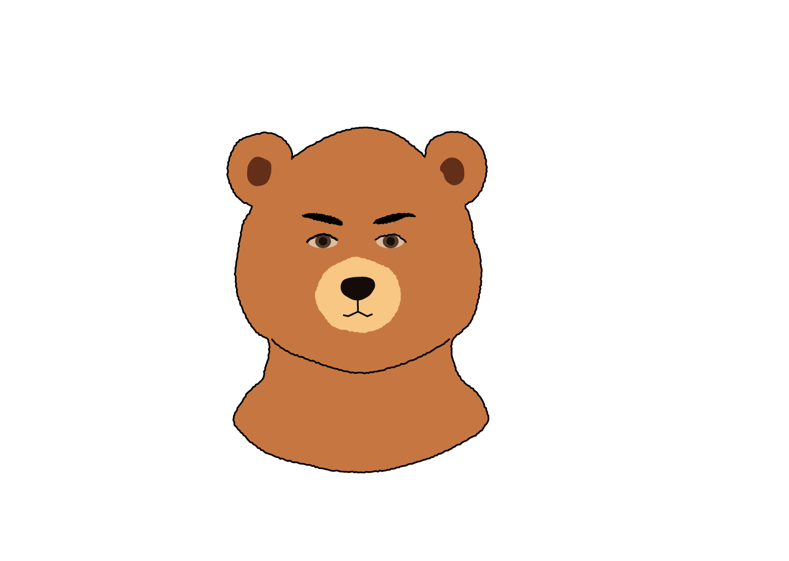
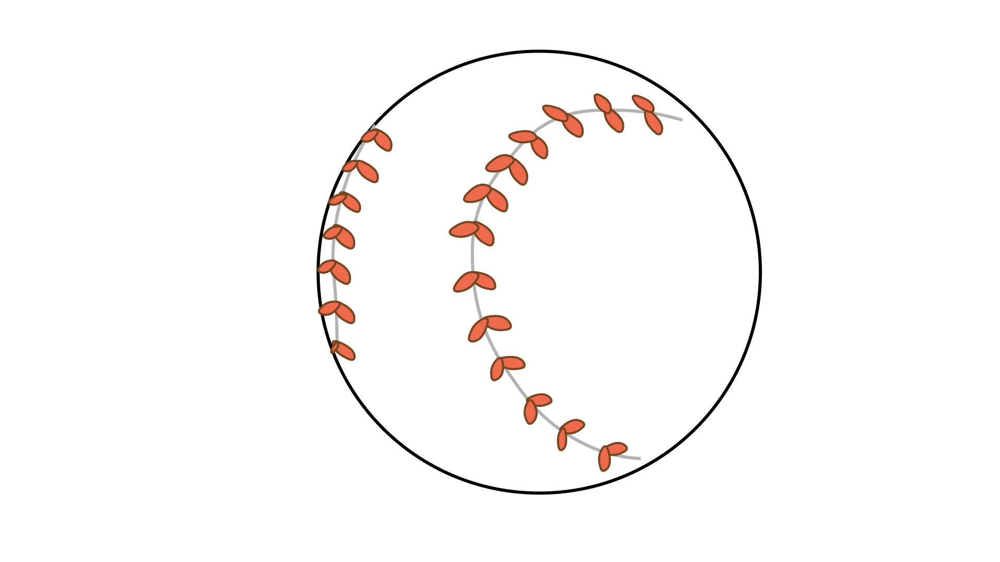
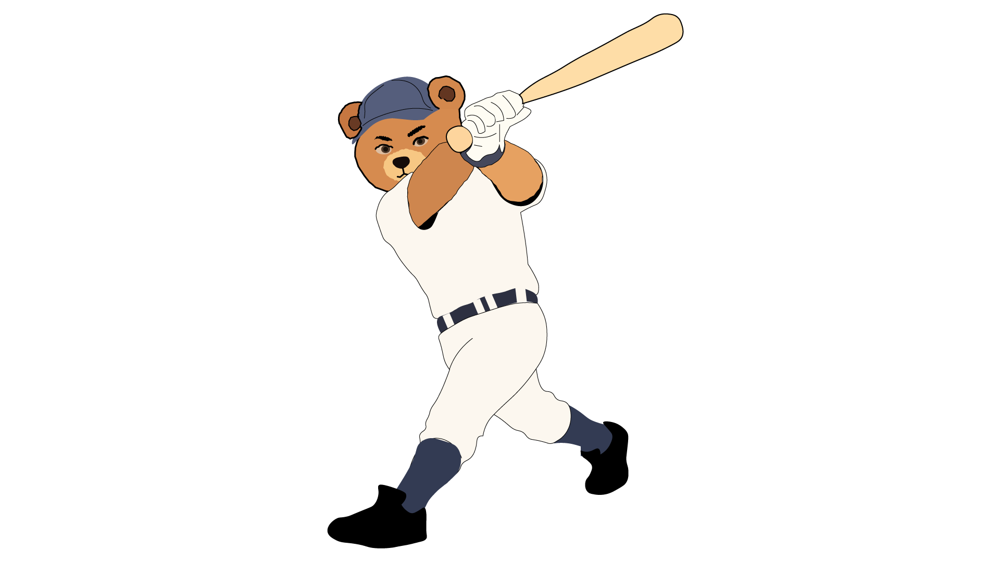

名前：杉浦 慶
年齢：28
出身地：愛知県
職業：理学療法士・トレーナー
スポーツ整形外科としてスポーツ選手へのトレーニングのサポート、けがをしてしまった選手へのリハビリのサポート以外にも高齢者のリハビリなども行っている。
その中で休日を使い高校野球部のトレーナとして活動している。
トレーニングの指導のみではなく、野球をやっていた経験から動きの指導なども行っている。
その中で休日を使い高校野球部のトレーナとして活動している。
トレーニングの指導のみではなく、野球をやっていた経験から動きの指導なども行っている。
今の仕事の内容とやりがい
今はメインはスポーツ整形で働いていて、リハビリにも少し関わっています。
休日を利用して高校野球部のトレーナーをやらせてもらっています。
基本的には怪我した人や日常生活に困っている人に対してスポーツに復帰できるようにしてあげたり、日常生活に支障がないように復帰させてあげるのが主な仕事です。
休日を利用して高校野球部のトレーナーをやらせてもらっています。
基本的には怪我した人や日常生活に困っている人に対してスポーツに復帰できるようにしてあげたり、日常生活に支障がないように復帰させてあげるのが主な仕事です。
どこにやりがいを感じますか？
やりがいはやっぱり、選手とか患者さんから感謝されることですかね！
きっかけはなんですか？
もともと整形外科で働きたいという思いではなく、トレーニングを教えたいというのが自分の中であって、その中でトレーニングの知識にプラスしてリハビリとかの知識もあれば自分の強みになるかなと思い、今は整形外科で働いています。
中学からトレーニングはやっていて、野球を辞めた後もトレーニングは好きだったから続けてたね。仕事終わりとかにジムに行ったりしていた。
中学からトレーニングはやっていて、野球を辞めた後もトレーニングは好きだったから続けてたね。仕事終わりとかにジムに行ったりしていた。
プレイヤーの道は考えなかったのですか？
自分がプレイヤーとしては中学生の時に自分が入ったチームが強かったのでそこで挫折してしまって、無理だなぁと思って、プロ野球選手になろうとは思わなかった。なので、高校までって決めて高校までは必死に頑張ったって感じです。


高校卒業後〜現在
今自分がやっている仕事は理学療法士で、理学療法士は国家資格が必要だから国家資格を取るために専門学校に入りました。
これは初めて話すけど卒業後全然別の仕事をしてて、。地元が愛知県だから、愛知県ってトヨタ自動車が結構盛んで、そこの工場で働いていた。その時にこれは自分に合っていないなって思ってやめて、まあ今にいたるって感じ。
これは初めて話すけど卒業後全然別の仕事をしてて、。地元が愛知県だから、愛知県ってトヨタ自動車が結構盛んで、そこの工場で働いていた。その時にこれは自分に合っていないなって思ってやめて、まあ今にいたるって感じ。
実際に働いてみて気づいたことはありますか？
教科書ベースで習ったところと全然かけ離れている所がある。特に高校の野球の現場で多いんだけど例えば、トレーニングとは別にここが痛いですって言われたときに全然見たことのないようなところから痛いっていう子もいるし、その子の将来も考えないといけないから、その子の将来がだめにならないように教科書ベースだけでなくていろんな人に相談したりしている。
そこに結構ギャップを感じた。
そこに結構ギャップを感じた。
プロの選手とかかわって感じたことは？
まあプロ野球選手って結構華やかな世界にみられがちだけど結構あの人たちも苦労している。仕事だからね。
野球ができなくなったらだめだから野球をするうえで根本として商売道具は体なわけでそこが一番大事だという気持ちは感じる。でもそれで全員が感じているわけではなくて二軍の選手や一軍半の選手ってあんまり体に対して気を付けていなかったりする。やっぱり一軍で活躍している選手ほどそこは感じるかな。
野球ができなくなったらだめだから野球をするうえで根本として商売道具は体なわけでそこが一番大事だという気持ちは感じる。でもそれで全員が感じているわけではなくて二軍の選手や一軍半の選手ってあんまり体に対して気を付けていなかったりする。やっぱり一軍で活躍している選手ほどそこは感じるかな。
高校生とかかわって感じたことは？
やっぱり高校生だから、トレーニングやってねっていっても必ずしも全員がやってくれるわけじゃないし、トレーニングの必要性を新入生には絶対伝えるようにはしてるんだけど。でもなかなか感じ取れない子もいるし。
だから、一番気を付けていることは一応スタッフとして法政にかかわってるんだけどスタッフ寄りにはならないようにしていて。でも、選手よりに甘えすぎてもダメだからいい塩梅で厳しくもなく甘すぎることもなく、という立ち位置を保つようには気をつけている。そっちのほうが接しやすいだろうし、高校生だとこっちからあまり言ってしまうとやってくれない。
だから、一番気を付けていることは一応スタッフとして法政にかかわってるんだけどスタッフ寄りにはならないようにしていて。でも、選手よりに甘えすぎてもダメだからいい塩梅で厳しくもなく甘すぎることもなく、という立ち位置を保つようには気をつけている。そっちのほうが接しやすいだろうし、高校生だとこっちからあまり言ってしまうとやってくれない。

出会いの理由と将来
目標が、自分の店を出したい、ジムをだしたいっていうのが長期的な目標で、その前に自分の名前を売り出さないとなかなかお客さんとかも来てくれない。
そのために、プロ野球のトレーナーになりたいなって思って、そのためには現場で経験しないといけない。
だったらどこか行きたいなって思って高校でも大学でも。どうしようと思って東京に知り合いが多いわけじゃないから自分で動くしかないなってなって。そんなに高校も知ってるわけじゃないから。
だから、東京の私立の高校を調べて片っ端から電話かけて、たまたま佐相先生がいつかトレーナーとってみたかったんですって言ってくれて一回話させてくださいってなって法政に行くことになった。
そのために、プロ野球のトレーナーになりたいなって思って、そのためには現場で経験しないといけない。
だったらどこか行きたいなって思って高校でも大学でも。どうしようと思って東京に知り合いが多いわけじゃないから自分で動くしかないなってなって。そんなに高校も知ってるわけじゃないから。
だから、東京の私立の高校を調べて片っ端から電話かけて、たまたま佐相先生がいつかトレーナーとってみたかったんですって言ってくれて一回話させてくださいってなって法政に行くことになった。
大きいジムを作りたいのですか？
大きいジムを作りたいわけではなくて、それよりもなるべく来てくれる人に対して一対一でパーソナルな感じで教えられたらいいかな。
ターゲット層としては子供を見てたこともあるし、今はリハビリで高齢者も相手にしているか子供から高齢者まで幅広くやろうかなって思ってる。
ターゲット層としては子供を見てたこともあるし、今はリハビリで高齢者も相手にしているか子供から高齢者まで幅広くやろうかなって思ってる。
やはり野球にも関わっていたいですか？
そうだね、いろんなスポーツも今見てるけどやっぱり野球が一番わかるし、ほかのスポーツとかだとつらさとかもあまりわからないから野球が一番かな
目標達成まではどのようなビジョンですか？
一応今働いているリハビリのところは今後リハビリで働きたいわけではないから、３年ぐらいでやめようと思ってる。どちらかというとトレーニングを選手たちのパフォーマンスを上げたいっていうのが一番だから。
そこから社会人や独立などの専属になろうかなって。それを経験してプロで活躍できたらいいなって。それが今描いていること。
そして、とんとん拍子に行けば自分のジムを出す。そんな感じかな。
そこから社会人や独立などの専属になろうかなって。それを経験してプロで活躍できたらいいなって。それが今描いていること。
そして、とんとん拍子に行けば自分のジムを出す。そんな感じかな。